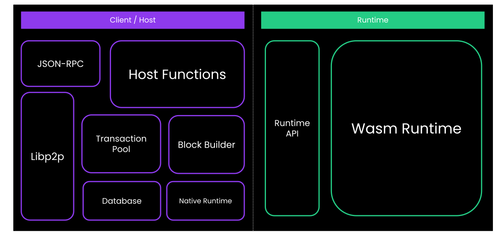
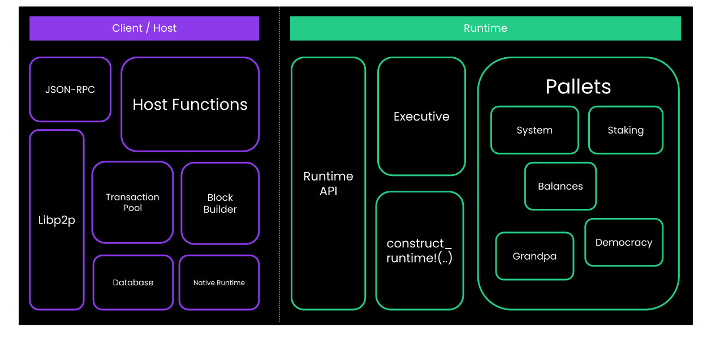

<!DOCTYPE html>
<html lang="en">

<head>
  <meta charset="utf-8" />
  <meta name="viewport" content="width=device-width, initial-scale=1.0, maximum-scale=1.0, user-scalable=no" />

  <title>FRAME Deep Dive</title>
  <link rel="shortcut icon" href="./../../../assets/favicon.ico" />
  <link rel="stylesheet" href="./../../../dist/reset.css" />
  <link rel="stylesheet" href="./../../../dist/reveal.css" />
  <link rel="stylesheet" href="./../../../assets/styles/PBA-theme.css" id="theme" />
  <link rel="stylesheet" href="./../../../css/highlight/shades-of-purple.css" />

  <link rel="stylesheet" href="./../../.././assets/styles/custom-classes.css" />

</head>

<body class="site">
  <header class="site-header">
    <!-- This logo is a link only on the watching server, not the production build -->
    <a href="">
      
    </a>
  </header>
  <main class="reveal">
    <article class="slides">
      <section ><section data-markdown><script type="text/template">

# FRAME Deep Dive
</script></section><section data-markdown><script type="text/template">
## Agenda

Recall the following figure:



<aside class="notes"><p>Without frame, there is the runtime and there is the client, and an API that sits in between.</p>
</aside></script></section><section data-markdown><script type="text/template">
## Agenda

By the end of this lecture, you will fully understand this figure.


</script></section></section><section ><section data-markdown><script type="text/template">
## Expanding A Pallet

- Grab a simple pallet code, and expand it.

- `Pallet` implements the transactions as public functions.
- `Pallet` implements `Hooks`, and some equivalents like `OnInitialize`.
- `enum Call` that has in itself is just an encoding of the transaction's data

- and implements `UnfilteredDispatchable` (which just forward the call back to `Pallet`)
</script></section><section data-markdown><script type="text/template">
### Expanding A Pallet

- Make sure you understand why these 3 are the same!

```rust
let origin = ..;

// function call
Pallet::<T>::set_value(origin, 10);

// dispatch
Call::<T>::set_value(10).dispatch_bypass_filter(origin);

// fully qualified syntax.
<Call<T> as UnfilteredDispatch>::dispatch_bypass_filter(Call::<T>::set_value(10), origin);
```
</script></section></section><section ><section data-markdown><script type="text/template">
## `construct_runtime!` and Runtime Amalgamator.

- Now, let's look at a minimal runtime amalgamator.
</script></section><section data-markdown><script type="text/template">
### `construct_runtime!` and Runtime Amalgamator.

- struct `Runtime`
- implements the `Config` trait of all pallets.
- implements all of the runtime APIs as functions.
- `type System`, `type SimplePallet`.
- `AllPalletsWithSystem` etc.
  - and recall that all pallets implement things like `Hooks`, `OnInitialize`, and all of these traits are tuple-able.
- enum `RuntimeCall`
- enum `RuntimeEvent`, `GenesisConfig`, etc. but we don't have them here.
</script></section></section><section ><section data-markdown><script type="text/template">
## Executive

- This part is somewhat optional to know in advance, but I want you to re-visit it in a week and then understand it all.

- I present to you, Executive struct:

```rust
pub struct Executive<
  System,
  Block,
  Context,
  UnsignedValidator,
  AllPalletsWithSystem,
  OnRuntimeUpgrade = (),
>(..);
```
</script></section><section data-markdown><script type="text/template">
#### Expanding The Generic Types.

```rust
impl<
    // System config, we know this now.
    System: frame_system::Config,
    // The block type.
    Block: sp_runtime::traits::Block<Header = System::Header, Hash = System::Hash>,
    // Something that has all the hooks. We don't know anything else about pallets here.
    AllPalletsWithSystem: OnRuntimeUpgrade
      + OnInitialize<System::BlockNumber>
      + OnIdle<System::BlockNumber>
      + OnFinalize<System::BlockNumber>
      + OffchainWorker<System::BlockNumber>,
    COnRuntimeUpgrade: OnRuntimeUpgrade,
  > Executive<System, Block, Context, UnsignedValidator, AllPalletsWithSystem, COnRuntimeUpgrade>
where
  // This is the juicy party, and we have to learn more sp_runtime traits to follow.
  Block::Extrinsic: Checkable,
  <Block::Extrinsic as Checkable>::Checked: Applyable
  <<Block::Extrinsic as Checkable>::Checked as Applyable>::Call: Dispatchable<_>,
{...}
```
</script></section><section data-markdown><script type="text/template">
#### `Block::Extrinsic: Checkable`

- Who implements `Checkable`?
- That's right, the `generic::UncheckedExtrinsic` that we indeed used as `Block::Extrinsic` in the
  top level runtime. Recall:

```rust
type UncheckedExtrinsic = generic::UncheckedExtrinsic<_, _, _, _>;
type Header = ..
type Block = generic::Block<Header, UncheckedExtrinsic>;
type Executive = frame_executive::Executive<_, Block, ...>;
```
</script></section><section data-markdown><script type="text/template">
#### What Does `Checkable<_>` Do?

- Signature verification!

```rust
impl Checkable<_> for UncheckedExtrinsic<_, _, _, _> {
  // this is the output type.
  type Checked = CheckedExtrinsic<AccountId, Call, Extra>;

  fn check(self, lookup: &Lookup) -> Result<Self::Checked, TransactionValidityError> {
    ..
  }
}
```
</script></section><section data-markdown><script type="text/template">
#### `<Block::Extrinsic as Checkable>::Checked: Applyable`

- `UncheckedExtrinsic::Checked` is `CheckedExtrinsic`.
- And it surely does implement `Applyable`.
</script></section><section data-markdown><script type="text/template">
#### What Does `Applyable<_>` Do?

- TLDR: `Ok(self.call.dispatch(maybe_who.into()))`
</script></section><section data-markdown><script type="text/template">
#### Lastly: `<<Block::Extrinsic as Checkable>::Checked as Applyable>::Call: Dispatchable`

- And guess who implemented `Dispatchable`, which we already looked at!
- The `enum Call` that we had in our expanded file!
</script></section><section data-markdown><script type="text/template">
### Circling Back..

So, to recap:

```rust
struct Runtime;

impl frame_system::Config for Runtime {}
impl simple_pallet::Config for Runtime {}

enum Call {
  System(frame_system::Call<Runtime>),
  SimplePallet(simple_pallet::Call<Runtime>),
}

impl Dispatchable for Call {
  fn dispatch(self, origin: _) -> Result<_, _> {
    match self {
      Call::System(system_call) => system_call.dispatch(),
      Call::SimplePallet(simple_pallet_call) => system_pallet_call.dispatch(),
    }
  }
}

struct UncheckedExtrinsic {
  function: Call,
  signature: Option<_>,
}

type Executive = Executive<_, UncheckedExtrinsic, ...>;

//
let unchecked = UncheckedExtrinsic::new();
let checked = unchecked.check();
let _ = checked.apply();
```
</script></section></section>
    </article>
  </main>

  <script src="./../../../dist/reveal.js"></script>

  <script src="./../../../plugin/markdown/markdown.js"></script>
  <script src="./../../../plugin/highlight/highlight.js"></script>
  <script src="./../../../plugin/zoom/zoom.js"></script>
  <script src="./../../../plugin/notes/notes.js"></script>
  <script src="./../../../plugin/math/math.js"></script>

  <script src="./../../../assets/plugin/mermaid.js"></script>
  <script src="./../../../assets/plugin/mermaid-theme.js"></script>

  <script src="./../../../assets/plugin/chart/chart.js"></script>
  <script src="./../../../assets/plugin/chart/chart.min.js"></script>

  <script src="./../../../assets/plugin/tailwindcss.min.js"></script>

  <script>
    function extend() {
      var target = {};
      for (var i = 0; i < arguments.length; i++) {
        var source = arguments[i];
        for (var key in source) {
          if (source.hasOwnProperty(key)) {
            target[key] = source[key];
          }
        }
      }
      return target;
    }

    // default options to init reveal.js
    var defaultOptions = {
      controls: true,
      progress: true,
      history: true,
      center: true,
      transition: 'default', // none/fade/slide/convex/concave/zoom
      slideNumber: true,
      mermaid: {
        startOnLoad: false,
        logLevel: 3,
        theme: 'base',
        themeVariables: {
          primaryColor: purple,
          primaryTextColor: white,
          primaryBorderColor: pink,
          lineColor: pink,
          secondaryColor: lightPurple,
          tertiaryColor: lightPurple,
        },
      },
      chart: {
        defaults: {
          color: 'lightgray', // color of labels
          scale: {
            beginAtZero: true,
            ticks: { stepSize: 1 },
            grid: { color: "lightgray" }, // color of grid lines
          },
        },
        line: { borderColor: ["#ccc", "#E6007A", "#6D3AEE"], "borderDash": [[5, 10], [0, 0]] },
        bar: { backgroundColor: ["#ccc", "#E6007A", "#6D3AEE"] },
      },
      plugins: [
        RevealMarkdown,
        RevealHighlight,
        RevealZoom,
        RevealNotes,
        RevealMath,
        RevealMermaid,
        RevealChart
      ]
    };

    // options from URL query string
    var queryOptions = Reveal().getQueryHash() || {};

    var options = extend(defaultOptions, {"width":1400,"height":900,"margin":0,"minScale":0.2,"maxScale":2,"transition":"none","controls":true,"progress":true,"center":true,"slideNumber":true,"backgroundTransition":"fade"}, queryOptions);
  </script>


  <script>
    Reveal.initialize(options);
  </script>
</body>

</html>